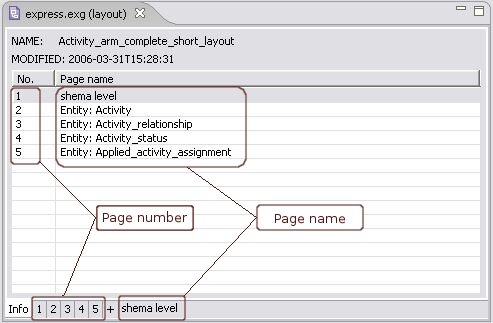

Each diagram page has a number and name. The page number is assigned
automatically, but user has a possibility to restart numbering after an
applicable page. The name of the page can be defined
by the user. The page name helps not to lose orientation if the amount
of pages of the diagram is pretty big. The page numbers and names
you can find in the Editor
panel (see Figure 1).

Figure
1. Page number and name location in the workbench